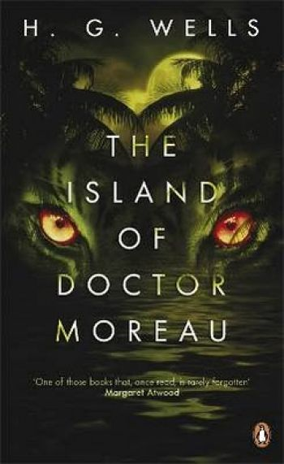

|

The Island of Doctor Moreau is an 1896 science fiction novel by English author H. G. Wells. The text of the novel is the narration of Edward Prendick, a shipwrecked man rescued by a passing boat who is left on the island home of Doctor Moreau, a mad scientist who creates human-like hybrid beings from animals via vivisection. The novel deals with a number of philosophical themes, including pain and cruelty, moral responsibility, human identity, and human interference with nature. Wells described it as "an exercise in youthful blasphemy".
The Island of Doctor Moreau is a classic of early science fiction and remains one of Wells's best-known books. The novel is the earliest depiction of the science fiction motif "uplift" in which a more advanced race intervenes in the evolution of an animal species in order to bring the latter to a higher level of intelligence. It has been adapted to film and other media on many occasions.
Adaptations:
The novel has been adapted into films and other works, on multiple occasions:
• Ile d'Epouvante (1913, The Island of Terror), a French silent film (also spelled L'Ile d'Epouvante and Isle d'epouvante). The 23-minute two-reeler film was directed by Joe Hamman in 1911 and then released in 1913. By late 1913, the film had been picked up by US distributor George Kleine and renamed The Island of Terror for its release in Chicago.
• Die Insel der Veschollenen (1921), German silent adaption
• Island of Lost Souls (1932), with Charles Laughton and Bela Lugosi.
• Terror Is a Man (1959), with Francis Lederer, Greta Thyssen, and Richard Derr. This Filipino film, directed by Gerardo de Leon, was reissued in the United States as Blood Creature (1964). Leon partnered with Eddie Romero to direct and release two follow-up films in 1968: Brides of Blood and Mad Doctor of Blood Island. All three were produced by Lynn-Romero Productions.
• At the age of 13, Tim Burton made an amateur adaptation of Wells' novel, The Island of Doctor Agor (1971).
• The Twilight People (1972), starring John Ashley and with an early role for Pam Grier, was Eddie Romero's version of the original story.
• Joseph Silva turned The Island of Dr. Moreau (1977), with Burt Lancaster and Michael York, into a derivative published by Ace.
• In The Island of Dr. Moreau (1996), with Marlon Brando, Val Kilmer, David Thewlis, Fairuza Balk, and Ron Perlman, Dr. Moreau introduced human DNA into the animals in his possession in order to make them more human.
• Seattle, Washington's Taproot Theatre Company performed Sean Gaffney's theatrical adaptation of the novel in 1999.
• The Simpsons annual Halloween special adapted the novel as a segment in their "Treehouse of Horror XIII" episode called "The Island of Dr. Hibbert", in which the doctor invites unsuspecting Springfield residents to his island resort, and turns them into human-animal hybrids.
• The film Dr. Moreau's House of Pain (2004), made by cult horror studio Full Moon Pictures, is billed as a sequel to the novel.
• In the third season of science fiction thriller TV series, Orphan Black, the book plays an important role containing Professor Duncan's key to human cloning.
• "The Madman's Daughter" tells the story from the point of view of Juliet Moreau, Dr. Moreau's deer-hybrid daughter.
• Big Finish Productions released the Audio Adaptation of this Novel titled as The Island of Dr Moreau
|